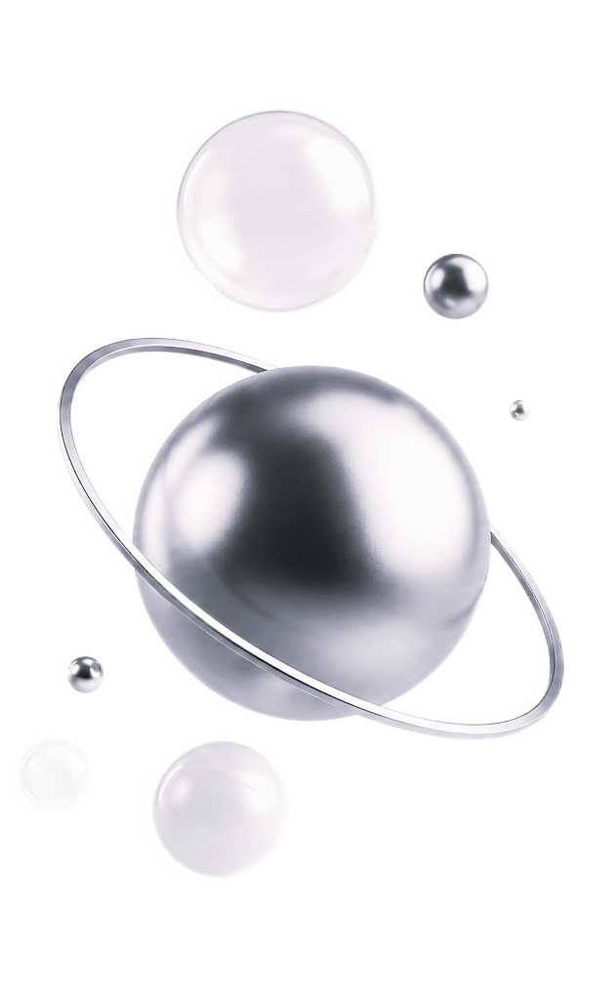
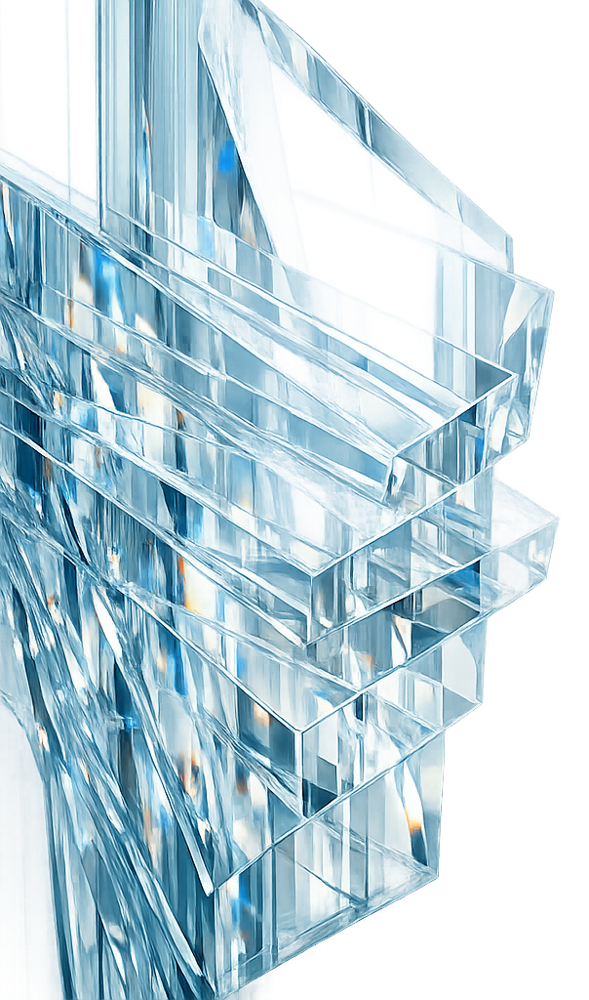
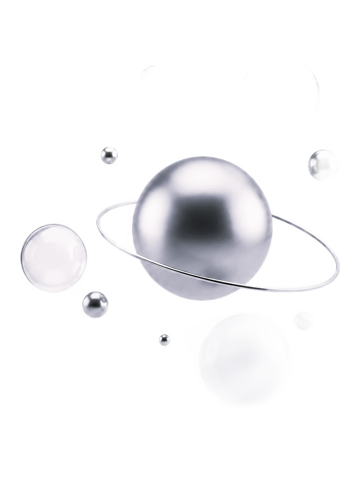
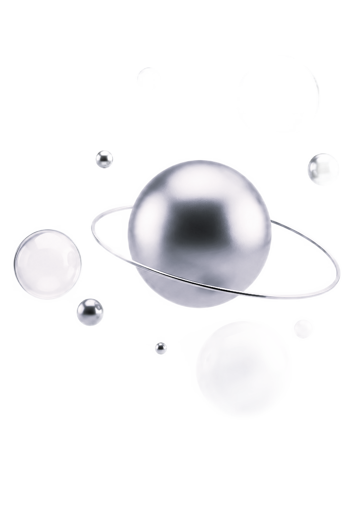
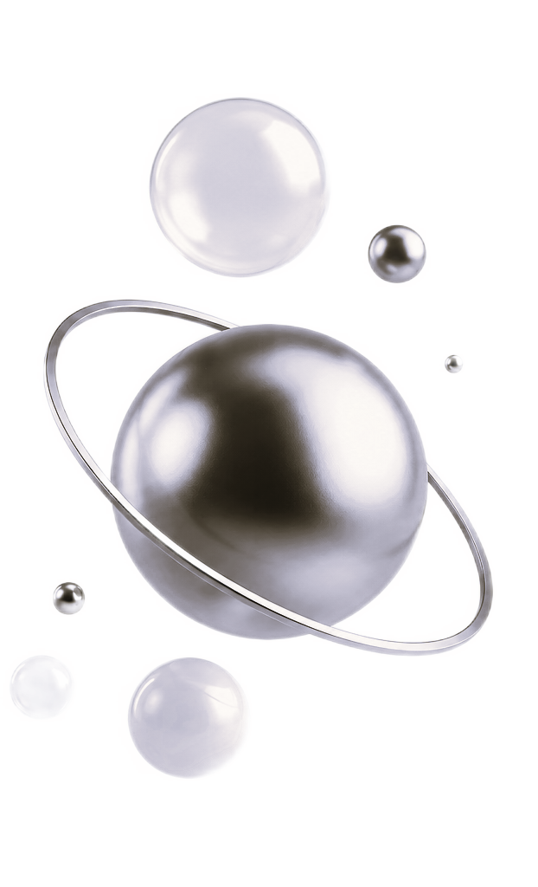
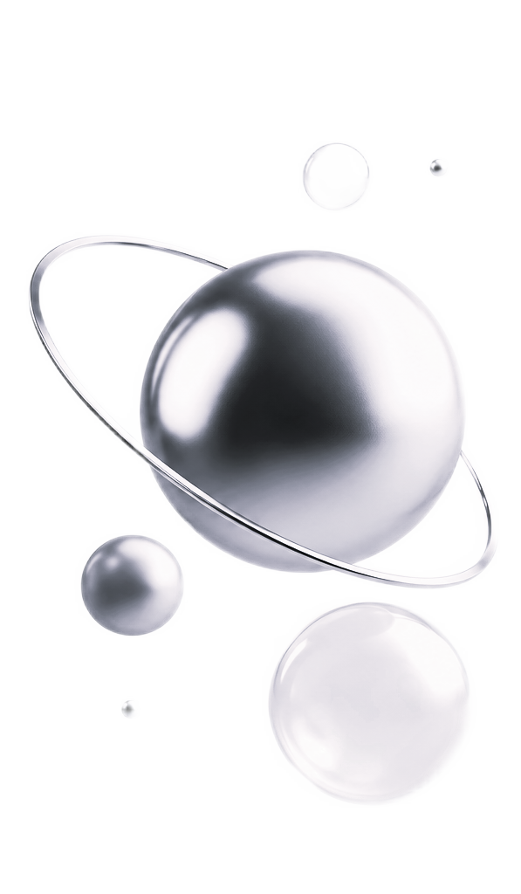

Комплексная
диагностика личности
У каждого человека в жизни есть только одна цель — реализовать свои потенциальные возможности. Но развитие не происходит автоматически, мы не растём, как деревья — просто по факту времени. Комплексное исследование — это инструмент ясности, который показывает как устроены именно вы и где находятся ваши реальные возможности. Чтобы действовать не вслепую, а осознанно и точно. Человек может быть счастлив только будучи собой.
Вам это знакомо?
Чувство неопределенности
Вы замерли и откладываете жизнь на потом, потому что любой выбор кажется фатальной ошибкой. Это изматывающее состояние «зависания», когда старые способы больше не работают.
Цель вроде есть, а энергии нет
План действий готов, но внутри — пустота и сопротивление. Каждое простое действие требует огромных волевых усилий, а вместо движения вы выбираете прокрастинацию.
Хотите кардинальных перемен
Вы чувствуете, что переросли свою нынешнюю жизнь, но застряли в «старой коже». Вас тянет к изменениям, но парализует страх потерять всё достигнутое.
Кризис середины жизни
Ощущение, что вы идете не по своей дороге, не дает дышать. Вроде бы всё на месте, но эта жизнь вам «не по размеру», а неизвестность «нового» держит на месте.
Запутались в целях
Вы хватаетесь за всё сразу. Чужие ожидания и навязанные «надо» настолько перемешались с истинными желаниями, что вы перестали понимать, куда тратить силы.
Потеря смысла
Раньше ваши достижения приносили драйв, а теперь всё кажется пустой декорацией. Вы словно живете на автопилоте, не понимая, ради чего всё это затевалось.

Что вы получите
Полная раскладка вашей личности по ключевым параметрам.
Психологические параметры
- Ведущие черты
- Темперамент
- Психическая стабильность
- Скрытые чувства
- Психосоматический профиль
- Конфликтные зоны
Когнитивные параметры
- Алгоритм принятия решений
- Прогностическая способность
- Реактивный потенциал
- Смысловые установки
- Ограничивающие убеждения
- Магическое мышление
Социальные параметры
- Модель доверия
- Сценарий отношений
- Семейная роль
- Лидерский потенциал
- Управляемость
- Гендерная реализация
Мотивационные параметры
- Скрытые драйверы
- Смысловые установки
- Ограничивающие убеждения
- Конфликтные зоны
Профессиональные параметры
- Профессиональный вектор
- Дисциплина и надежность
- Финансовые стратегии
- Лидерский потенциал
Параметры будущего
- Стратегический прогноз
- Кризисный прогноз
- Скрытые ресурсы

Фрагменты заключения
Примеры того, насколько глубоко мы погружаемся в анализ.
6
Я-концепция и самооценка
Я-концепция - это то, что вы о себе знаете. Самооценка - как вы себя оцениваете. У вас есть противоречие: с одной стороны вы относитесь позитивно к себе, с другой стороны у вас есть скрытая депрессия... Читать далее
Я-концепция - это то, что вы о себе знаете. Самооценка - как вы себя оцениваете. У вас есть противоречие: с одной стороны вы относитесь позитивно к себе, с другой стороны у вас есть скрытая депрессия... Читать далее
Я-концепция - это то, что вы о себе знаете. Самооценка - как вы себя оцениваете. У вас есть противоречие: с одной стороны вы относитесь позитивно к себе, с другой стороны у вас есть скрытая депрессия и чувство неполноценности.
Как вы оцениваете себя: Ваша самооценка построена на идее, что вы всем должны. Если вы соответствуете правилам, вы молодец, если нет — то нет. Без оценки других вы не понимаете, хорошая вы или нет.
37
Профессиональный вектор
Где будет хорошо: Гуманитарные профессии, связанные с помощью, заботой, образованием. Ваша высокая чувствительность поможет вам терпеливо работать с другим человеком... Читать далее
Где будет хорошо: Гуманитарные профессии, связанные с помощью, заботой, образованием. Ваша высокая чувствительность поможет вам терпеливо работать с другим человеком... Читать далее
Где будет хорошо: Гуманитарные профессии, связанные с помощью, заботой, образованием. Ваша высокая чувствительность поможет вам терпеливо работать с другим человеком. Вы не склонны конкурировать.
Также администрирование, но не руководство: вы умеете держать в голове много деталей, следить за сроками, но при этом вам не надо принимать жесткие решения, связанные с увольнением.
38
Финансовые стратегии
Ваша финансовая стратегия стоит на двух вещах: консервативности и зависимости. Благодаря консервативности, вы не рискуете в финансах и больше любите экономить... Читать далее
Ваша финансовая стратегия стоит на двух вещах: консервативности и зависимости. Благодаря консервативности, вы не рискуете в финансах и больше любите экономить... Читать далее
Ваша финансовая стратегия стоит на двух вещах: консервативности и зависимости. Благодаря консервативности, вы не рискуете в финансах и больше любите экономить. Зависимость основана на том, что муж основной добытчик.
Потенциал на увеличение дохода у вас сейчас низкий, потому что стратегия блокирует возможность роста. Чтобы зарабатывать больше, нужно уметь рисковать, себя презентовать, просить повышения. Это требует готовности быть заметной.
41
Сценарий отношений
Ваш цикл повторяется по схеме: терпение – накопление – взрыв – вина – терпение. Вы выбираете сильного, но критикующего мужчину... Читать далее
Ваш цикл повторяется по схеме: терпение – накопление – взрыв – вина – терпение. Вы выбираете сильного, но критикующего мужчину... Читать далее
Ваш цикл повторяется по схеме: терпение – накопление – взрыв – вина – терпение.
Вы выбираете сильного, но критикующего мужчину. Вы начинаете угождать, подстраиваться и терпеть. Когда терпение заканчивается, вы срываетесь, затем приходит чувство вины.
45
Стратегический прогноз
У вас есть два пути. Если оставить всё как есть: усиление соматизации (перенос нагрузки на тело), эмоциональное выгорание к 40-42 годам, отсутствие радости... Читать далее
У вас есть два пути. Если оставить всё как есть: усиление соматизации (перенос нагрузки на тело), эмоциональное выгорание к 40-42 годам, отсутствие радости... Читать далее
У вас есть два пути. Если оставить всё как есть: усиление соматизации (перенос нагрузки на тело), эмоциональное выгорание к 40-42 годам, отсутствие радости, ухудшение отношений с мужем.
47
Скрытые ресурсы
Огромный запас энергии: Вся она сливается на подавление себя. Если перестанете тратить эту мощь на самооборону, вы удивитесь, как много можете. Способность к эмпатии... Читать далее
Огромный запас энергии: Вся она сливается на подавление себя. Если перестанете тратить эту мощь на самооборону, вы удивитесь, как много можете. Способность к эмпатии... Читать далее
Огромный запас энергии: Вся она сливается на подавление себя. Если перестанете тратить эту мощь на самооборону, вы удивитесь, как много можете.
Способность к эмпатии: Вы замечаете то, чего не видят другие. В мире, где каждый занят собой, это огромная ценность.
Надежность: На вас можно положиться. Но ваш перфекционизм работает против вас — учитесь отличать «хорошо» от «идеально».


Реальные истории людей
Про «сломанный компас»
«Я чувствовал, что иду куда-то не туда. Диагностика стала для меня анализом смыслов. Тесты показали большой разрыв между моей природой и тем, чем я занимаюсь. В результате я понял, что я делаю легко, а что с помощью навязанной дисциплины, которая меня разрушала.»
Игорь
38 лет, собственник бизнеса
Про «невидимый тормоз»
«Я думала, что я ленивая. Оказалось, сил нет из-за внутреннего конфликта: желание быть хорошей блокировало серьезные дела. В отчете я увидела свои автоматические реакции и теперь понимаю, что внутри меня выключает энергию, и могу этим управлять.»
Марина
31 год, маркетолог
Про «чужой сценарий»
«В середине жизни я запуталась. Мы обнаружили, что мой выбор когда-то был сделан из дефицита безопасности. Мой ресурс — в творчестве, которое я подавляла 20 лет. Я получила инструкцию к самой себе: на что опираться в следующие 40 лет.»
Ольга
45 лет, юрист


Как все происходит
Вводная встреча
20–30 минут, чтобы вы могли честно рассказать, что идет не так и что хотите изменить. На этом этапе мы формулируем ваш запрос.
Комплексное тестирование
Вы проходите профессиональный пакет тестов. Это не гадание, а научный инструмент, который показывает объективную картину вашей личности.
Аналитика и саморефлексия
Вы получаете обработанные результаты и изучаете их в своем темпе, соотнося паттерны с реальными событиями из жизни.
Разбор и стратегия перемен
На итоговой 60-минутной сессии мы превращаем данные в понятный план действий. Это момент, когда пазл наконец-то складывается.